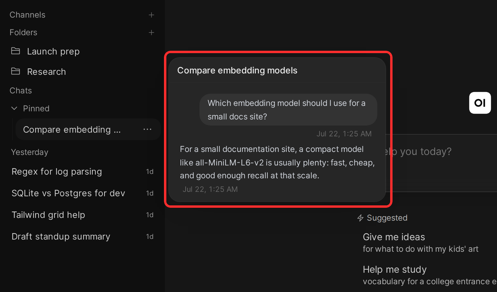
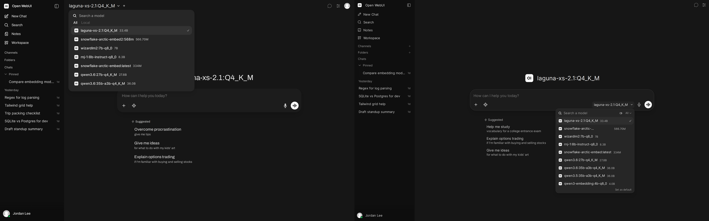
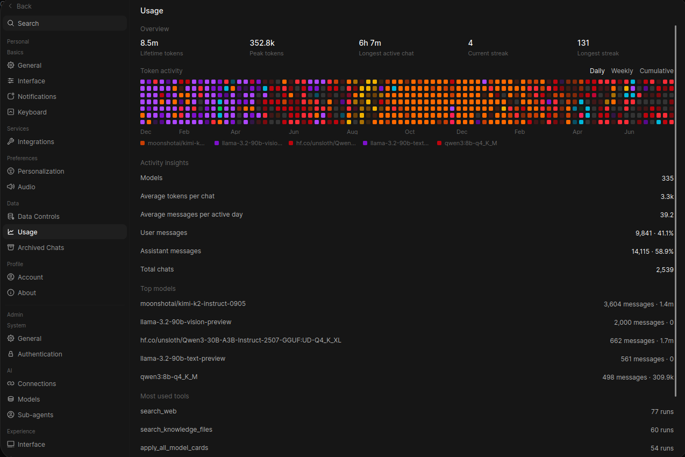
Open WebUI web · self-hosted · the category leader
- Sidebar has typed sections; folders paginate and sort; chats pin and search. The information architecture scales to hundreds of chats.
- Model switchable mid-conversation; Compare toggle fans one prompt to two models, both answers labeled.
- Per-chat variables: a small form (tone, audience) filled once and carried through the conversation and its forks.
- /status panel shows context usage, queued messages, running tasks.
STEAL The hover preview card (find the right chat without opening it), model sizes printed in the picker rows, and the usage heatmap-by-model as an idea for our usage page's by-lane view.
STEAL Picker lives in the composer, not a distant toolbar: the decision point sits where you type. Our override chip does the same.
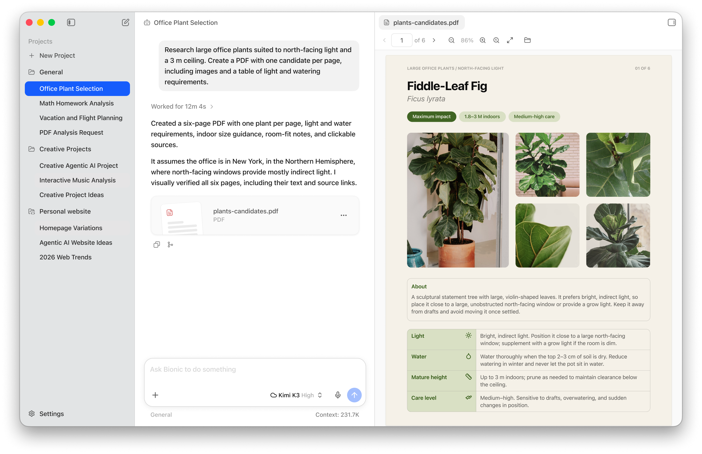
LM Studio desktop · the model-manager benchmark
- The Discover tab is the signature: staff-picked models front and center, and every model and quantization carries a colored hardware-fit badge computed against YOUR detected GPU/RAM (green rocket = runs well) BEFORE you download. No official screenshot was fetchable; see the docs live.
- Chat view: system-prompt panel + live sampling controls beside the thread; two chats side by side by dragging tabs.
- The Bionic shot shows their agent-era layout: three panes with a real artifact viewer, and capacity surfaced in the composer.
STEAL Fit-before-download is the roster manager's core interaction. Our device profile adds the state LM Studio lacks: "fits when the GPU is idle" (overnight lane).
STEAL Context counter directly in the composer, exact and numeric.

Jan desktop · the minimalist
- Hub groups each model's quantizations into Small / Balanced / Large with a Recommended tag and live VRAM/RAM estimates before download.
- Drop a .gguf into the models folder and it appears in the picker: zero-friction bring-your-own-model.
- Every conversation auto-saves as a named thread; local API server is first-class.
STEAL The overall calm: this is closest to the "simple and fast" north star. Also the Small/Balanced/Large + Recommended grouping for quants.
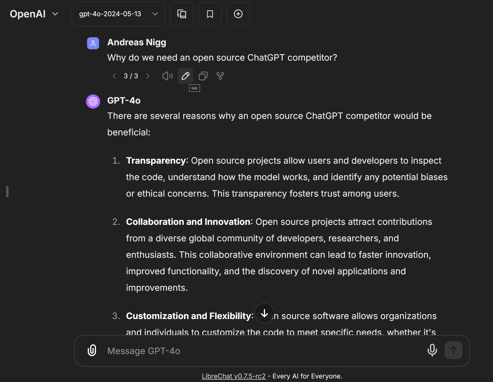
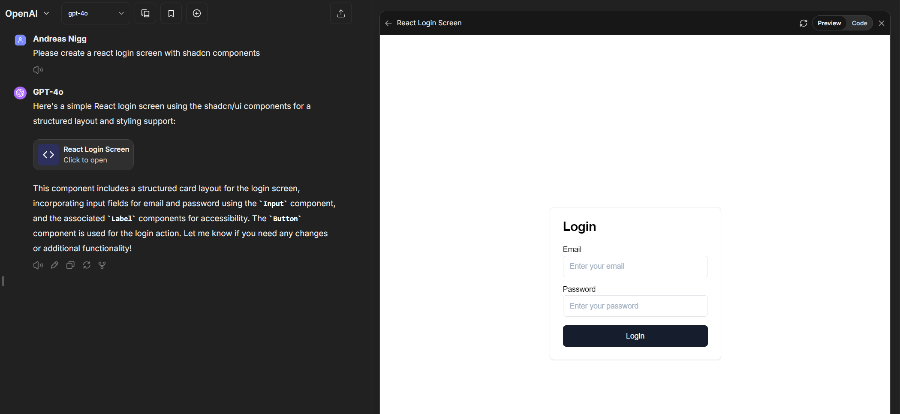
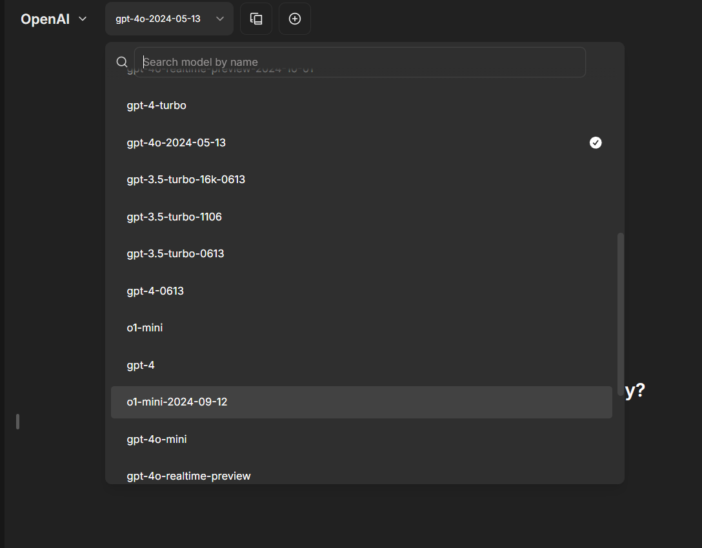
LibreChat web · the artifacts benchmark
- Fullest preview pane in the category: React/HTML/SVG/Mermaid/Markdown, inline cards that expand, fullscreen, SVG/PNG export.
- contextUsage / contextCost config: a real-time context and cost gauge inside the conversation UI. The clearest live meter of any app here.
- Presets save endpoint+model+parameter combos next to the picker.
STEAL Model identity printed on every answer (avatar + name), response versioning, and the artifacts pane behavior (expand, fullscreen, export).
AVOID Their documented layout bug: Parameters and Artifacts share one right-panel slot, and hiding one hides both. Our rule: independent surfaces, independent close controls.
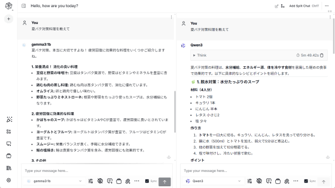
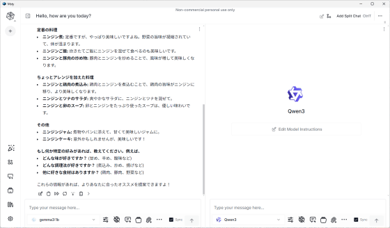
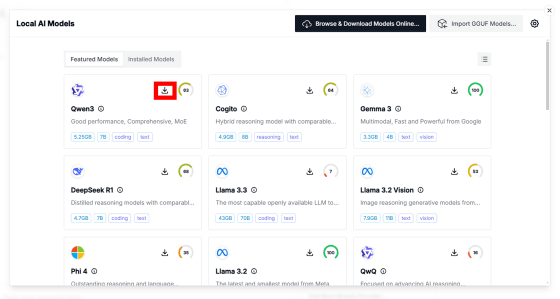
Msty desktop · the split-view benchmark
- "Add Split Chat" divides the window per model; one prompt fans to all panes in real time, labeled. Local and cloud models mix freely in one view.
- Now a 4-product suite (Studio chat / Go agents / Nexus gateway+usage / Stack knowledge): the same chat-vs-governance separation our spec makes.
STEAL The split mechanic IS our "multiple windows" requirement, and doubles as a live mini-gauntlet: same prompt, local vs Fable, side by side. Also note their circular fit gauge on model cards.
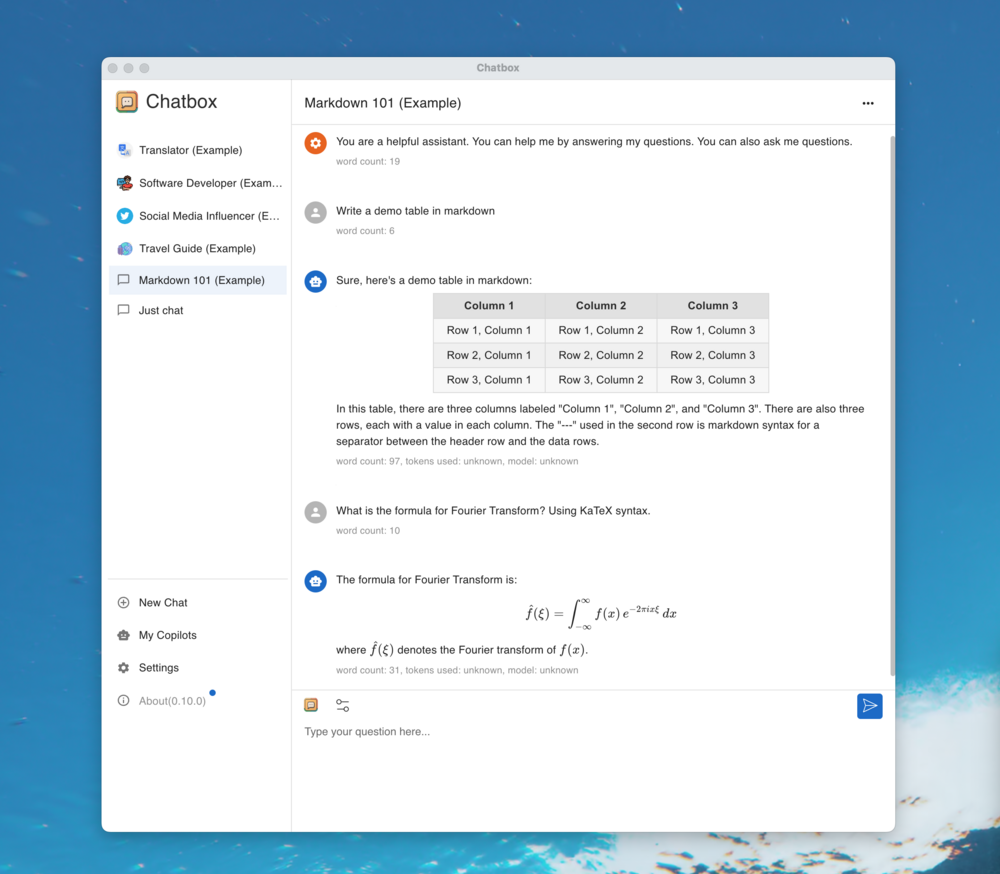
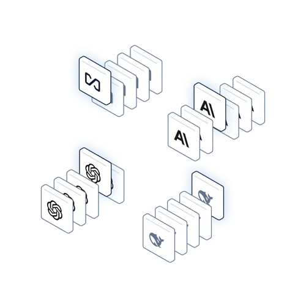
Chatbox + AnythingLLM the two ideas worth keeping
- Chatbox: provider-first setup with a "Check" button that verifies the connection before you can create a chat; personas as the sidebar's organizing unit.
- AnythingLLM: Workspace = isolation boundary. Documents, vectors, conversations, AND the model binding scoped together; one workspace local-only, another cloud.
STEAL The connection Check button for onboarding (verify Ollama + claude CLI reachable), and workspace-style isolation as the mental model behind our Private chats: privacy is a property of the chat, not a per-message checkbox.